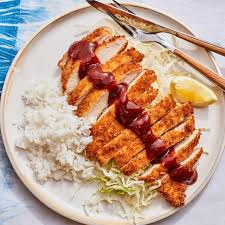

Odin Recipes
Chicken Katsu

Chicken Katsu on top of white rice.
Chicken katsu is a panko breaded chicken dish, commonly served with rice and a katsu sauce.
Chicken
Panko Breading
rice
Katsu sauce
steps to prepare chicken katsu
Pound chicken
bread chicken